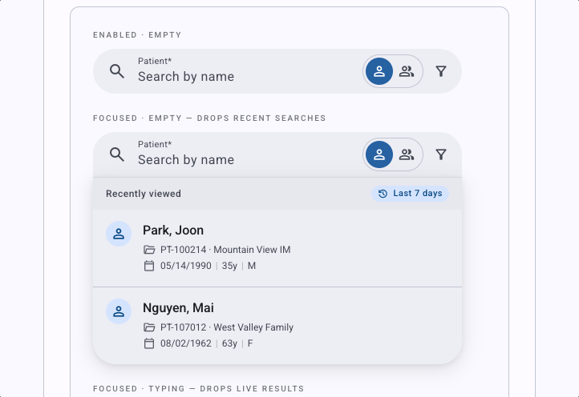
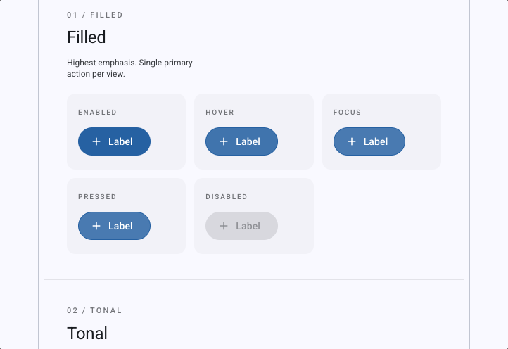
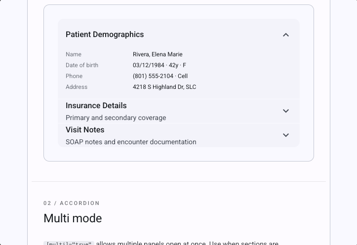
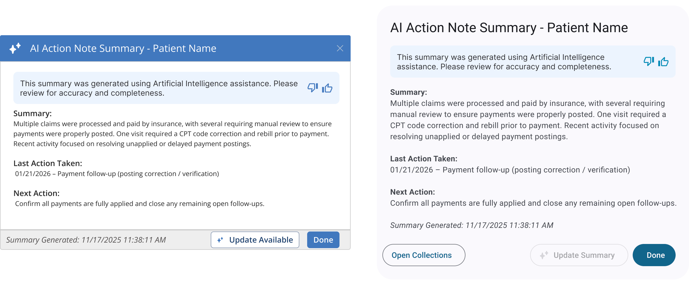
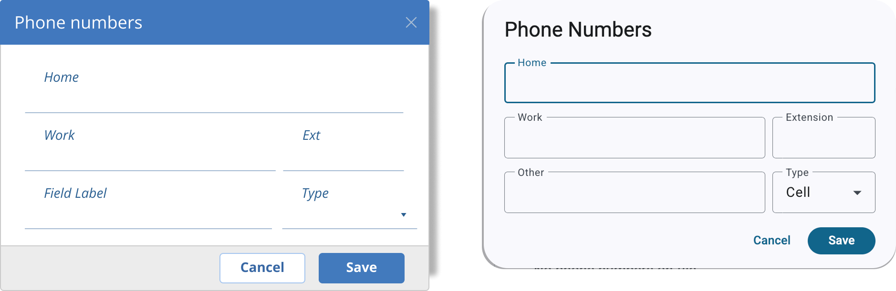
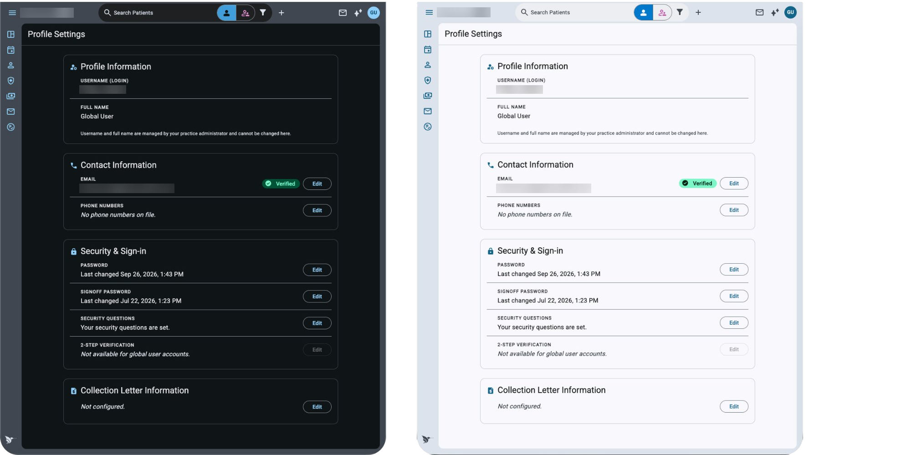

Eventually, we hit the breaking point. Changes in Angular meant we couldn’t move beyond version 18 without breaking core UI behavior.
What started as a design-system maintenance concern had become a technical blocker.
I worked with Engineering and leadership to establish a path back to standard Angular Material 3, then led the UX standards and component guidance needed to make that transition work across the product.
How we got here
AdvancedMD had spent years modifying Angular Material to meet individual product and design requirements. Some customizations were necessary. Others had accumulated as teams made decisions independently.
Over time, our component library drifted further from the framework it was built on.
We’d raised concerns about the maintenance burden before, but once the breaking changes prevented further upgrades, the problem became difficult to ignore.
We presented leadership with three options: invest heavily in upgrading and re-customizing the existing library, purchase and implement a different component system, or move back toward standard Angular Material 3.
Leadership chose the third option.
The decision wasn’t to eliminate customization entirely. It was to stop treating customization as the default.
Making the transition
We worked with an offshore development team over two months to move from our customized Material 2 components toward standard Material 3.
The migration happened component by component. The goal was to remove unnecessary overrides and allow product teams to adopt the updated components without breaking existing behavior.
My part of the work was defining how those components should be used, mapping the first upgrades, designing examples in real product contexts, and reviewing and testing the components as Engineering completed them.
Standard Material provides a component library, but it doesn’t make every product decision for you.
For example, we still needed consistent rules for field layouts, icon placement, density, feedback messages, and when to use different component variants. Without that guidance, teams could implement the same standard components in completely different ways.
I documented those decisions so designers and developers had a common reference.



Component examples include interaction states and realistic product data, so designers can prototype with patterns that match Engineering’s implementation.
I also supported the updated Figma modules and built a Claude Design library using the same component patterns.
The goal was to keep design exploration close to what we could actually build, rather than creating another gap between design files and production.
What changed in the interface
The difference is easiest to see in the product itself.
Our older components carried years of visual overrides. Dialogs, form fields, and other controls often behaved or appeared differently from standard Angular Material.
Moving toward Material 3 gave us a more consistent baseline for structure, interaction states, theming, and accessibility.


One practical benefit was dark mode.
Previously, custom styling had to be maintained for individual components. With standard Material 3 theming, light and dark modes could use the same underlying component system.

These examples show the visual change, but the more important difference is what happens the next time the framework needs to be upgraded.
By reducing our dependence on custom overrides, we have a more maintainable path forward.
Deciding what should be standard
Returning to Material 3 didn’t mean accepting every default without question.
We still needed to make decisions about how components should work in AdvancedMD.
One example was outlined versus filled text fields. Rather than choosing based on personal preference, I documented the intended use cases and established guidance teams could apply consistently.
The same applied to feedback patterns. A validation error, a successful save, and a critical system failure shouldn’t all interrupt the user in the same way.
We defined when to use field-level messages, snackbars, inline errors, and dialogs, along with the expected behavior of each.
Match the component to the interruption the message deserves
| Message type | Component | Behavior |
|---|---|---|
| Field-level validation error | Field decorator + tooltip | No layout shift |
| Success confirmation | Snackbar | Auto-dismisses |
| Page or form error | Inline message | Shifts UI; sits above the form |
| Critical error requiring action | Modal dialog | Blocks the task until acknowledged |
| Stacked patient messages | Side sheet + message cards | Keeps the record in view |
Feedback patterns documented by message type, component, and expected behavior.
This became an important part of the work: documenting not just which component to use, but why.
If a team encounters the same decision six months later, they should be able to understand the reasoning without starting the discussion again.
Building a shared standards library
Our lead developer and I held in-depth working sessions covering components, interaction patterns, accessibility, UX writing, icons, and other recurring design decisions.
I researched each topic, combined our product-specific decisions with established guidance from Material 3 and WCAG, and wrote the documentation.
The result is a living UX standards library shared by Design and Engineering.
It includes component usage rules, interaction guidance, accessibility requirements, writing standards, and a product icon library.
When to use a modal dialog
- Critical system and save errors
- Decisions that need explicit confirmation before the system can proceed
- Notices that must be acknowledged
- Non-blocking feedback — use a snackbar
- Field-level validation — use field decorators
- Page or form-level errors — use an inline message
Each component includes guidance on when to use it, when not to use it, and how it should behave.
For example, our dialog documentation explains which situations genuinely require an interruption and which are better handled with less disruptive feedback.
The standards also cover details that are easy to overlook, such as form-field spacing, icon placement, error-message wording, and focus behavior.
These aren’t particularly glamorous decisions. But when six development teams are building within the same product, small inconsistencies accumulate quickly.
Having a shared reference makes those decisions easier to apply and maintain.
Accessibility beyond the defaults
Material 3 provides an accessibility foundation, but using an accessible component library doesn’t automatically make the finished application accessible.
We still needed to account for how components were implemented, labeled, combined, and used within our workflows.
I documented the accessibility requirements Engineering needed to add, including accessible names for icon-only buttons, visible focus states, screen-reader announcements, and focus management in a single-page application.
Buttons — what M3 gives you, and what your team must add
- Renders a native button — keyboard accessible
- Disabled state sets aria-disabled
- Activates on Enter and Space
- aria-label on every icon-only button — describe the action, not the icon
- aria-hidden on icons inside labeled buttons
- A visible :focus-visible outline (global)
Separating what the component provides from what our implementation still needs.
I also audited our color tokens against WCAG AA contrast requirements. Some existing colors were appropriate for decorative elements but didn’t meet the requirements for body text or interactive states.
Rather than treating those findings as isolated fixes, I documented the rules so they could inform future component decisions.
Checking our own color tokens against WCAG AA
| Token | Hex | Ratio on white | Decision |
|---|---|---|---|
| Body text | #1c1c2e | 16.7 : 1 | All text sizes |
| Secondary text | #44474f | 9.3 : 1 | All text sizes |
| Muted text / input border | #74777f | 4.48 : 1 — just fails | Large text and 3:1 borders only — not body text |
| Placeholder | #aaaaaa | 2.3 : 1 — fails | Replaced with a darker, passing token |
| Divider | #d0d3db | 1.5 : 1 — fails | Decorative only — never for input state |
| Warning amber | #f29900 | 2.3 : 1 — fails | Icon accent only, never the sole text color |
Color tokens evaluated for contrast, with usage restrictions or replacements documented.
Our lead developer then used the accessibility documentation to create a coding skill that helps developers apply those requirements by default, alongside Pendo tagging.
That was an especially useful outcome of the documentation work. The guidance wasn’t just available for someone to read; it could become part of how components were implemented.
Where things stand
The migration has established a path beyond the Angular 18 limitations created by our customized library.
We now have a standard Material 3 direction, updated component resources in Figma and Claude, and a shared standards library that Design and Engineering can continue using as the product evolves.
The transition is ongoing, but the approach is different from the one that created the problem in the first place.
We’re using standard components wherever they meet the need, documenting the exceptions, and making design decisions reusable across teams.
What I like most about this work is that it addresses two problems at once.
Engineering needed a component system it could keep upgrading. Design needed a way to maintain consistency without reviewing and reinventing every decision.
The standards library connects those needs, giving both teams a foundation they can continue building on.